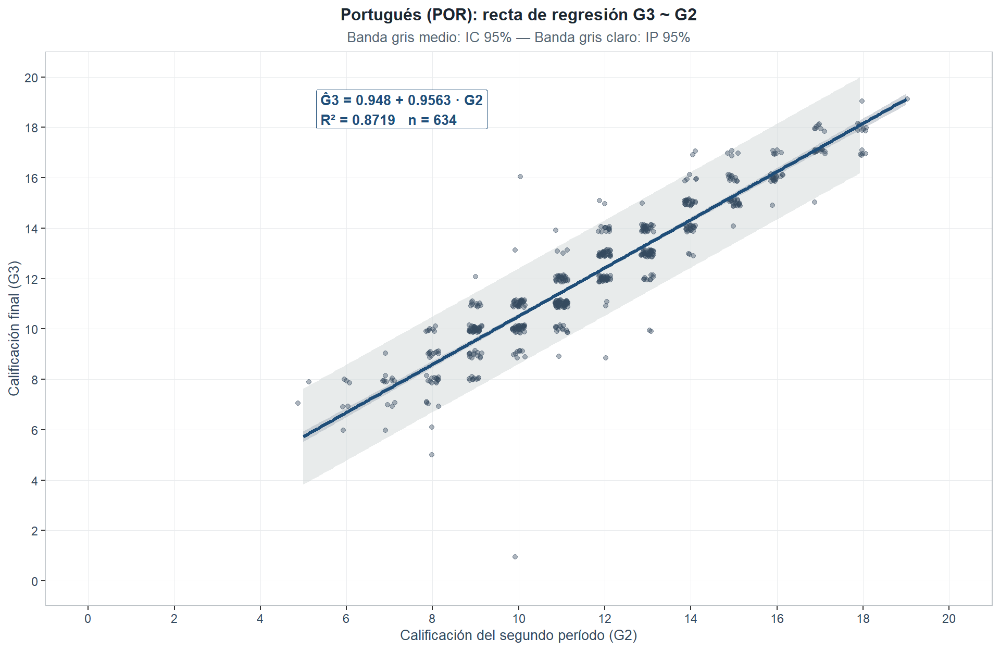
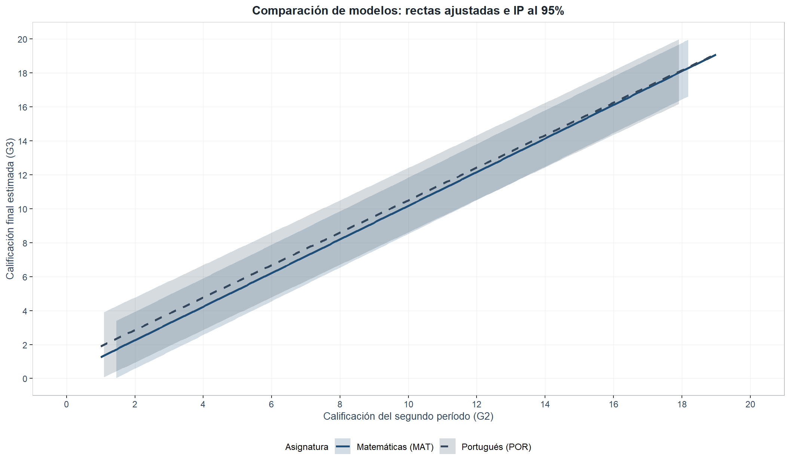

3 Modelo de regresión lineal simple — Portugués (POR)
Para POR se adopta la misma especificación de la Sección 2.1 sobre el conjunto studentpor depurado:
\[G3_i = \beta_0 + \beta_1 \cdot G2_i + \varepsilon_i, \quad i = 1, \ldots, 634\]
3.1 Estimación de parámetros
| Parámetro | Estimación | Error estándar | Estadístico t | p-valor | Decisión (\(\alpha = 0.05\)) |
|---|---|---|---|---|---|
| \(\hat{\beta}_0\) (Intercepto) | 0.9480 | 0.1756 | 5.3995 | < 0.001 | Rechaza \(H_0\) |
| \(\hat{\beta}_1\) (G2) | 0.9563 | 0.0146 | 65.6000 | < 0.001 | Rechaza \(H_0\) |
Tabla 3.1: el modelo ajustado es
\[\widehat{G3} = 0.948 + 0.9563 \cdot G2\]
La pendiente \(\hat{\beta}_1 = 0.9563\) es menor que la de MAT (\(\hat{\beta}_1 = 0.9903\)): un valor por debajo de 1 sugiere una leve compresión hacia la media (fenómeno galtoniano, Galton 1886). El intercepto \(\hat\beta_0 = 0.948\) es estadísticamente significativo al 5 % en POR (p < 0.001), a diferencia de MAT donde no lo era — diferencia atribuible al mayor tamaño muestral (\(n_{\text{POR}} = 634\)) que infla la potencia para detectar desviaciones modestas respecto de cero; sustantivamente, la extrapolación a \(G2 = 0\) sigue careciendo de sentido por estar fuera del rango muestral. El error residual \(\hat{\sigma} = 0.964\) excede el de MAT (\(0.8407\)), señalando menor precisión predictiva en POR.
3.2 Prueba de hipótesis global — ANOVA y prueba F
Misma estructura que la Sección 2.3: \(H_0: \beta_1 = 0\) vs. \(H_1: \beta_1 \neq 0\); \(F_0 = MSR/MSE \sim F_{1,n-2}\) bajo \(H_0\).
| Fuente de variación | Suma de cuadrados (SC) | Grados de libertad (gl) | Cuadrado medio (CM) | Estadístico F | p-valor |
|---|---|---|---|---|---|
| Regresión (G2) | 3999.3168 | 1 | 3999.3168 | 4303.362 | < 0.001 |
| Error residual | 587.3473 | 632 | 0.9293 | NA | NA |
| Total | 4586.6641 | 633 | NA | NA | NA |
Tabla 3.2: \(F_0 = 4303.3624\) con 1 y 632 gl, p < 0.001 → se rechaza \(H_0: \beta_1 = 0\). El \(F\) de POR (4303.3624) es menor que el de MAT (4892.5684), coherente con la correlación también menor (\(r = 0.9338\) en POR vs. \(0.9656\) en MAT).
3.3 Coeficiente de determinación
| Métrica | Valor | Interpretación |
|---|---|---|
| \(R^2\) | 0.8719 | 87.19% de la variabilidad de G3 es explicada por G2 |
| \(R^2\) ajustado | 0.8717 | Ajustado por grados de libertad |
| \(\hat{\sigma}\) (Error estándar residual) | 0.9640 | Desviación típica de los residuales (en puntos de calificación) |
| \(n\) (observaciones) | 634.0000 | Observaciones con G3 > 0 |
Tabla 3.3: \(R^2 = 0.8719\) — el 87.19 % de la variabilidad de G3 queda explicada por G2 (porcentaje inferior al de MAT: \(R^2 = 0.9323\); \(\Delta R^2 = -0.0604\)). Una explicación plausible: el contenido matemático tiende a ser jerárquico y acumulativo, mientras que Portugués incorpora componentes más heterogéneos (comprensión lectora, producción escrita, competencia oral) que introducen mayor varianza residual entre períodos.
3.4 Intervalos de confianza para los parámetros
Con \(t_{0.025,632} = 1.9637\) (Casella y Berger, 2002, §11.3):
| Parámetro | Estimación | LC inferior (2.5%) | LC superior (97.5%) | Interpretación |
|---|---|---|---|---|
| \(\beta_0\) (Intercepto) | 0.9480 | 0.6032 | 1.2927 | Rango plausible del intercepto poblacional |
| \(\beta_1\) (G2) | 0.9563 | 0.9276 | 0.9849 | Incremento medio de G3 por cada punto adicional en G2 |
Tabla 3.4: IC al 95% para \(\beta_1 = [0.9276, 0.9849]\), cero excluido → se rechaza \(H_0\). El IC es ligeramente más ancho que el de MAT (amplitud 0.0573 vs. 0.0557). Como \(SE(\hat\beta_1) = \hat\sigma/\sqrt{S_{xx}}\), el mayor \(S_{xx}\) de POR (\(4373.6151\) vs. \(3526.1064\)) queda compensado por el mayor \(\hat\sigma\) (\(0.964\) vs. \(0.8407\)), produciendo \(SE(\hat\beta_1) = 0.0146\) vs. \(0.0142\) en MAT.
3.5 Intervalos de confianza y predicción para G3
| G2 (x₀) | Ĝ3 (predicción) | IC inf. (95%) | IC sup. (95%) | IP inf. (95%) | IP sup. (95%) |
|---|---|---|---|---|---|
| 4 | 4.773 | 4.539 | 5.007 | 2.865 | 6.681 |
| 6 | 6.685 | 6.504 | 6.867 | 4.784 | 8.587 |
| 8 | 8.598 | 8.467 | 8.729 | 6.700 | 10.496 |
| 10 | 10.510 | 10.420 | 10.601 | 8.615 | 12.406 |
| 12 | 12.423 | 12.347 | 12.499 | 10.528 | 14.318 |
| 14 | 14.335 | 14.237 | 14.434 | 12.440 | 16.231 |
| 16 | 16.248 | 16.105 | 16.391 | 14.350 | 18.146 |
| 18 | 18.161 | 17.967 | 18.354 | 16.258 | 20.063 |
| 20 | 20.073 | 19.825 | 20.321 | 18.164 | 21.982 |
| * S_xx = 4373.6151; media de G2 = 11.7539; t_{0.025, 632} = 1.9637. |

Figure 3.1: Modelo G3 ~ G2 en Portugués (POR): recta de regresión ajustada (azul marino), banda del IC 95% para la media condicional (gris medio) y banda del IP 95% para observaciones individuales (gris claro). La información del modelo se ubica en la esquina superior izquierda para evitar superposiciones con los datos.
Para \(G2 = 12\) en POR: $ = $ 12.423, IC 95% \([12.347, 12.499]\), IP 95% \([10.528, 14.318]\). El IP de POR (≈ 3.789 puntos) es más amplio que el de MAT (≈ 3.312), consistente con el mayor \(\hat\sigma\).
3.6 Comparación de ambos modelos
| Métrica | MAT | POR |
|---|---|---|
| \(n\) (obs. con G3 > 0) | 357 | 634 |
| \(\hat{\beta}_0\) | 0.2753 | 0.948 |
| \(\hat{\beta}_1\) (G2) | 0.9903 | 0.9563 |
| \(SE(\hat{\beta}_1)\) | 0.0142 | 0.0146 |
| \(t_0\) para \(\beta_1\) | 69.9469 | 65.6 |
| \(F_0\) (prueba global) | 4892.5684 | 4303.3624 |
| \(R^2\) | 0.9323 | 0.8719 |
| \(R^2\) ajustado | 0.9322 | 0.8717 |
| \(\hat{\sigma}\) | 0.8407 | 0.964 |
| IC 95% para \(\beta_1\) | [0.9625, 1.0182] | [0.9276, 0.9849] |
| * Ambos modelos son globalmente significativos con p-valor < 0.001. |

Figure 3.2: Superposición de las rectas de regresión ajustadas para Matemáticas (línea sólida azul marino) y Portugués (línea discontinua gris oscuro), con sus intervalos de predicción al 95% en tonos grises. Las etiquetas de identificación se sitúan al extremo derecho de cada recta, en espacio libre.
Tabla 3.6 y Figura 3.2: MAT supera a POR en \(R^2\) (0.9323 vs. 0.8719), \(F_0\) (4892.5684 vs. 4303.3624) y precisión residual (\(\hat\sigma = 0.8407\) vs. 0.964). La pendiente en MAT (\(\hat\beta_1 = 0.9903\)) es prácticamente una identidad G2 → G3; la de POR (\(0.9563\)) sugiere ligera compresión hacia la media (fenómeno galtoniano clásico). Ambos modelos son globalmente significativos (\(p < 0.001\)); la validación de supuestos sigue en la Sección 4.